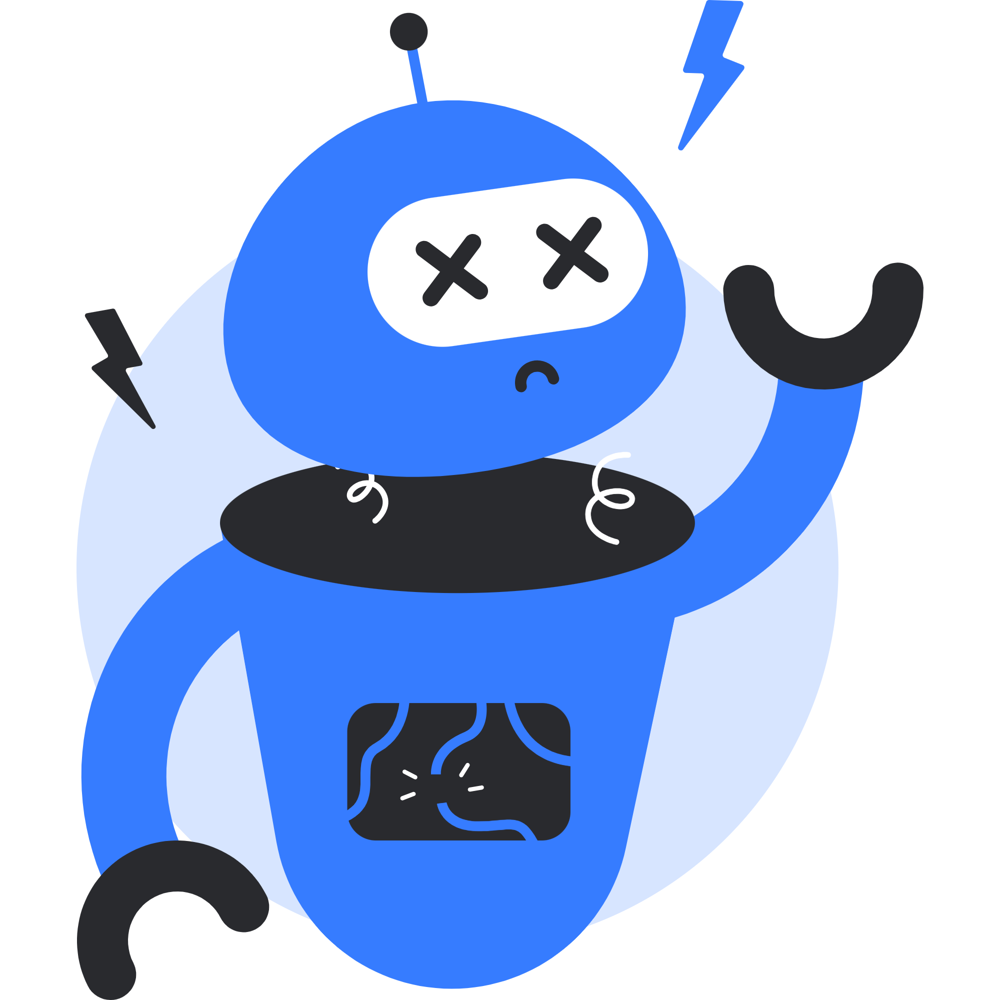

Research Groups
1. Human Computer Interaction Research Group
- Prof. Dr. Mostafa Sami
- Dr. Waleed Yousef (Coordinator)
- Dr. Omar Hamd
- Dr. Ayman Ezzat
2. Computational Linguistics Research Group
- Prof. Dr. Mohamed Belal
- Assoc. Prof. Mohamed Haggag
- Dr. Amal Abou Tabl (Coordinator)
- Dr. Yasser Hifny
3. Cloud Computing Research Group
- Cloud Computing Research Group
- Prof. Dr. Aliaa Youssef
- Assoc. Prof. Maha Attia
- Assoc. Prof. Mahmoud El-Khouly
- Dr. Hossam Shamardan
- Dr. Mona Nasr
- Dr. Mohamed Marie
- Dr. Laila Abdel-Latif
- Dr. Manal Abd El Kader
4. Data Mining Research Group
- Prof. Dr. Ahmed Sharaf Eldin Ahmed
- Prof. Dr. Mohamed Belal
- Prof. Dr. Hawaf Abdalhakim
- Assoc. Prof. Mohamed Haggag
- Assoc. Prof. Maha Attia
- Dr. Laila Abd El Latif (Coordinator)
- Dr. Mohamed Marie
- Dr. Hossam Shamardan
- Dr. Yasser Hifny
- Dr. Shaimaa Ezzat
5. High Performance Computing Research Group
- Dr. Yasser Hifny
- Dr. Amal Abou Tabl
6. Soft Computing Research Group
- Prof. Dr. Iraqy Khalifa
- Prof. Dr. Mohamed Belal
- Dr. Hossam Shamardan
7. Medical & Bio-Informatics Research Group
- Prof. Dr. Ahmed Sharaf Eldin Ahmed (Coordinator)
- Prof. Dr. Aliaa Youssef
- Prof. Dr. Samar Kasem (Faculty of Medicine, Ain Shams University)
- Prof. Dr. Brendan Orner (University of London, UK)
- Prof. Dr. Tayseer Soliman (Faculty of Computers, Assiut University)
- Assoc. Prof. Maha Attia
- Dr. Amany Abdou
- Dr. Shaimaa Rashad
- Dr. Wessam El Behaidy
- Mr. Amr Elhosary
- Ms. Nafisa Mohamed
- Ms. Marwa Gharib
8. Business Intelligence Research Group
- Prof. Dr. Ahmed Sharaf Eldin Ahmed
- Assoc. Prof. Maha Attia
- Dr. Mona Nasr
- Dr. Ahmed Bahaa (coordinator)
- Dr. Manal Abd El Kader
9. Image Processing Research Group
- Prof. Dr. Aliaa Youssef
- Dr. Yasser Hifny
- Dr. Hossam Shamardan
- Dr. Wessam El Behaidy
10. Medical Engineering Research Group
- Prof. Dr. Aliaa Youssef
11. Security Research Group
- Assoc. Prof. Maha Attia
- Assoc. Prof. Mahmoud El-Khouly
- Dr. Hossam Shamardan
- Dr. Mahmoud Mostafa (Coordinator)
12. Data Management Research Group
- Prof. Dr. Ahmed Sharaf Eldin Ahmed (Coordinator)
- Mrs. Nermin Abd El Hakim
- Prof. Dr. Reda Ammar (University of Connecticut, USA)
- Dr. Doaa Saad
- Dr. Sherif Kholeif
- Dr. Laila Abd El Latif
- Dr. Shaimaa Ezzat
- Dr. Manal Abd El Kader
- Mrs. Hanan Fahm
13. Conceptual Mapping Research Group
- Prof. Dr. Ahmed Sharaf Eldin Ahmed
- Dr. Adel Elsayed (university of Bolton, UK) – (Coordinator)
- Dr. Sahar Attia (Cairo University)
- Dr. Mona Nasr
- Dr. Ayman Khedr
- Mrs. Aya Kamal
- Mrs. Rania Elsayed
- Mr. Mostafa Thabet
- Ms. Sara Saad
- Ms. Mai El Defrawy
14. Knowledge Engineering Research Group
- Prof. Dr. Iraqy Khalifa
- Prof. Dr. Mohamed Belal
15. Computer Arabization and Islamic Applications Research Group
- Prof. Dr. Ahmed Sharaf Eldin Ahmed (Coordinator)
- Prof. Dr. Mohamed Hammad (Faculty of Dar Eloloom, Cairo University)
- Prof. Dr. Khalid Saber (Faculty of Dar Eloloom, Cairo University)
- Prof. Dr. Shafik Aboseada (Faculty of Arabic Language, AlAzhar University)
- Assoc. Prof. Maha Attia
- Dr. Amany Abd El Samie
- Dr. Amany Abdou
- Dr. Mahmoud Mostafa
- Dr. Shaimaa Rashad
- Mrs. Hala Abolhamayl
16. Information Security INFOSEC Research Group
- Assoc. Prof. Mahmoud El-Khouly
- Dr. Mahmoud Mostafa (Coordinator)
- Dr. Laila Abd-Ellatif
- Dr. Shaimaa Ezzat
- Dr. Marwa Salah Farhan
17. Multi-Level Optimization Research Group
- Prof. Dr. Torky Sultan
- Prof. Dr. Mohamed Belal
- Assoc. Prof. Osama Emam
18. Speech Processing and Machine Learning Research Group
- Prof. Dr. Aliaa Youssef
- Dr. Yasser Hifny
19. Intelligent Decision Support Systems IDSS Research Group
- Prof. Dr Hawaf Abdalhakim
20. Mobile Computing Research Group
- Prof. Dr Hawaf Abdalhakim
List of master theses
| Researcher name | Thesis Title | Supervisors | Date | specialization |
|---|---|---|---|---|
| Mona Mahrous Ahmed | Secured Sink Node WSN | Prof.DR Moustafa Samy Dr Hossam Shamrdan |
28-10-2016 | |
| Sara Mohamed Ahmed Naiem | Developing a computer system to measure the skills of software developers - "update" | Assoc.Prof Mahmoud Abd el-Latif Assoc.Prof Amany Abdo DR Shaimaa Ezzat |
28-10-2015 | |
| Mohamed Badr Moustafa | Development of efficient Quality Models for Critical Systems | Prof.Dr Yehia Helmy DR Laila Abe el-Latif |
27-5-2015 | |
| Sara Medhat Mohamed | Increasing the Productivity of Irradiation Facility Using Multi Objective Optimization Techniques | prof.DR Aliaa Yousef Assoc.Prof Ahmed Hassan kamel |
25-10-2015 | |
| Naglaa Hosny Ibrahim | On Stochastic Multi-Level Large Scale - Fractional Programming Problem | Prof.DR Osama emamm Assoc.Prof Amany Abdo |
21-5-2015 | |
| Hanaa Mahmoud Hassan | Mining of Hepatitis C Virus Data for Egyptians in the Newly - Developed Database (HCVDBegy) |
Prof.Dr Ahmed Sharaf Assoc.prof Amr Mohamed Said |
9-3-2016 | |
| Salwa Osama | Anomalous Child Behavior Detection In Ubiquitous Environments | Prof.DR Moustafa Samy Assoc.Prof Ayman Ezzay |
7-9-2016 | |
| Ahmed Mohamdeen Fraag | Abnormalities Detection in Digital - Mammography | Prof.DR Moustafa Samy Assoc.Prof Waleed Yousef |
2-6-2016 | |
| Osama Basel GHazy | A Cellular Neural Network-Based Model for Edge Detection |
Prof.DR Mohamed Belal Assoc.prof Hala Abd el-Galil |
10-8-2015 | |
| Ahmed Magdy | On Stochastic Large Scale Bi-Level Multi Objective Quadratic Programming Problem | Prof.DR Osama Emam DR Shaimaa Ezzat |
27-3-2016 | |
| Enas Fathy | Towards Agile Implementation of Test Maturity Model Integration (TMMI) Using Scrum Practices | Assoc.Prof Mahmoud Abd el-Latif Assoc.Prof Ahmed Bahaa |
7-8-2016 | |
| Sara Elsayed Amin | A Proposed Metric for Measuring Reusability Effectiveness of Learning Objects in Learning Environment | Prof.DR Ayman Khedr Assoc.Prof Mona Nasr |
27-5-2015 | |
| Hend Saad Hafez | Adaptive Business Process Management Model for Performance Enhancement | Prof.DR Mohamed Haggag Prof.DR Ayman Khedr |
28-10-2015 | |
| Samr Fathy Mokhtar | Ontology Based Emotion Detection | Prof.DR Mohamed Haggag DR Nahla |
18-5-2016 | |
| Beshoy Fahmy | Communication of Security Information and Event Management Systems for Cloud Environments | Assoc.Prof Mahmoud EL khouly DR Mahmoud Moustafa |
24-5-2016 | |
| Mohamed Farahat | Use of Data Mining Techniques for Prediction of Response of Chronic HCV Genotype 4 Patients to DAAs | Prof.Dr Ahmed Sharaf Prof.Dr Smar Kasim Assoc.Prof Amany Abdo |
8-3-2017 | |
| Lobna Abd el-Aziz | Personal Integrated Electronic Health Record | Prof.Dr Ahmed Sharaf Assoc.Prof Mona Nasr |
9-3-2017 | |
| Ahmed Hesham Moustafa | Intelligent Automatic Methodology for Detection and Containment of Smartphone Malware | Prof.Dr Aliaa Yousef Dr Marwa Abd el-Fattah |
20-11-2016 | |
| Aya Hamdy | Detection of Abnormal Driving Behavior in Ubiquitous Environment | Prof.Dr Moustafa Samy Assoc.Dr Ayman Ezzat |
7-9-2016 | |
| Ranin Abd el-Magid | Treatment of Epilepsy Using Computer System | Prof.Dr Atef Ghalwash Dr Wesam Mohamed |
20-12-2016 | |
| Nagwa Mawad | An Evolutionary Creative-Design Approach for Water Flow Networks Design | Prof.Dr Mohamed Belal | 1-2-2017 | |
| Rehab Allah Mohamed | Modifying Unified Modeling Language to Support Aspect Oriented Software Development | Prof.Dr Moustafa Samy Prof.Dr Aml AboTabl |
29-12-2016 | |
| Yasser Mohamed Saber | Automatic Extraction of Ontology From Unstructured Text | Prof.Dr Mohamed Belal Assoc.prof Hala Abd el-Galil |
13-3-2017 | |
| Mohamed Elaraby | Using Rough Multi-Level Linear Programming Technique to Improve Service Performance in Cloud | Prof.Dr Mohamed Belal Prof.Dr Osama Emam |
16-3-2017 | |
| Abd el-Karim Mohamed | Arabic Lip Reading System | Prof.Dr Mohamed Hagag Assoc.prof Hala Abd el-Galil |
29-6-2016 | |
| Salman Ali Hussein | A Soft Computing Model for Electrical Power Load Forecasting | Prof.Dr Mohamed Belal Assoc.prof Hala Abd el-Galil |
13-7-2017 | |
| Hadder Sami | Task Dependency Aware Scheduling Approach for Grid Computing | Prof.Dr Mohamed Belal Assoc.prof Hala Abd el-Galil |
10-7-2017 | |
| Noha Magdy | On Fuzzy Multilevel Multi-Objective Quadratic Programming Problems | Prof.Dr Osama Emam Assoc.Prof Sherief abd el-Kader |
22-1-2017 | |
| Aml Fahim | An Intelligent Tutoring Model for Mentally Handicapped Children | Prof.Dr Yehia Helmy Prof.Dr Mohamed Belal |
30-8-2016 | |
| Helal Ahmed | Using Fuzzy Large Scale bi-Level Multi-Objective Quadratic Programming Problem | Prof.Dr Osama Emam Assoc.Prof Manal Abd el-Kader |
11-3-2017 | |
| Tasnim Abd el-Hamid | Suggested Framework to Apply Agile Methodology in Egyptian Software Companies | Assoc.Prof Mahmoud Abd el-Lattif Assoc.Prof Sherief Abd el-Kader |
2-1-2017 | |
| Mohamed Attia | A Model for Assessing and Enhancing Efficiency of E-Learning Systems | Prof.Dr Sayed Abd el-Gaber Assoc.Prof Manal Abd el-Kader |
5-4-2017 | |
| Gehad Ahmed Soliman | An Efficient Association Rule Hiding Algorithm for Privacy Preserving Data Mining | Prof.Dr Ahmed Sharaf Dr Laila Abd el-Latiff |
9-3-2017 | |
| Fify Mohamed | A Proposed Integrated Business Intelligence Framework for Enhancing Healthcare Analytics | Prof.Dr Ayman Khedr Assoc.Prof Sherief Abd el-Kader |
3-1-2017 | |
| Khlod Mohamed | Managing the Impact of Software Requirements Changes Using System Dynamics | Assoc.Prof Mahmoud Abd el-Latif Assoc.Prof Sherief Abd el-Kader |
2-1-2017 | |
| Abdallah Sayed | A Proposed Interoperable Architecture for Cloud Based Educational Software Systems | Prof.Dr Laila Elfangary Assoc.Prof Ahmed Bahaa |
10-7-2017 | |
| Ahmed Sabry | Using Stochastic Multi-Level Quadratic Programming Technique for Solving Bilateral Problems in Governmental Institution | Prof.Dr Osama Emam Dr Shaimaa ezzat |
22-1-2017 | |
| Hesham Mohamed Moustafa | A Proposed Load Balancing Technique for Cloud Computing | Prof.Dr Ayman Khedr Assoc.Prof Mona Nasr |
21-9-2016 | |
| Ahmed Abd el-Ghany Kasim | A Proposed Secure Model for Cloud Computing Based Services Cloud Software as a Service | Prof.Dr Mahaa Attia Assoc.Prof Mona Nasr |
28-12-2016 | |
| Mahmoud Mohamed Mohamed Bahlol | Enhancing Lean Software Development Process Using Devops | Prof.Dr Yehia Helmy Assoc.Prof Ahmed Bahaa |
19-7-2017 | |
| Nesma Mahmoud Taher | New Insight Into Customer Value Analysis Using Data Mining Techniques | Assoc.Prof Doaa Saad Dr Shaima Ezzat |
4-5-2017 | |
| Marwa Hosny | تحسين استرجاع المعلومات للمكتبات الرقمية باستخدام الويب الدلالي Enhancing Information Retrieval on Digital Libraries Using Semantic Web |
Assoc.Prof Mahmoud Abd el-Lattif Dr Shaima Ezzat |
31-7-2017 | |
| Aya Mohamed Moustafa Ammar | Mining Learning to Decision Making Support: the Case of Enhancing Students Performance Level in Helwan | Prof.Dr Ayman Khedr Assoc.prof Amany Abdou |
20-6-2017 | |
| Abdelrahaman Mohamed Helmy | A Proposed Framework for Geospatial Information Systems Based On Cloud Computing For the Health Sector in Egypt |
Assoc.Prof Mona Nasr Assoc.Prof Marwa Salah |
25-7-2017 | |
| Amira Hassan Mohamed | A Measuring Model of Critical Success Factors for Customer Relationship Management Using Data Mining Techniques | Assoc.Prof Mahmoud Abd el-Lattif Assoc.Prof Marwa Salah |
31-7-2017 |
List of Phd theses
| Researcher name | Thesis | supervisors | Date |
|---|---|---|---|
| Laila Abd el-Hamid | Analyzing and Summarizing Online Opinions and Reviews Using Sentiment Analysis | Prof.Dr Ahmed Sharaf Assoc.Prof Doaa Saad |
26/10/2017 |
| Moustafa Thabet | On Rough Multi-Level Large Scale Fractional Programming Problem | Prof.Dr Mohamed Elsayed Omran Prof.Dr Osama Emam |
21/12/2017 |
| Mohamed Abd el-Salam | Proposed Framework to Construct Virtual Reality E-Learning Environment Based on Personalized Learning | Prof.Dr Yehia Helmy Prof.Dr Osama Emam Prof.Dr Ayaman Khedr |
15/5/2018 |
| Mohamed Hassan Ibrahim | A Proposed Parading for Analyzing and Mining Large Seale Online Communities to Maximize Business Returns | Prof.Dr Laila El fangary Assoc.Prof Mona Nasr Dr Shaimaa Ezzat |
19/4/2018 |
| Amr Ali Saad Omar Abo hany | Using Rough Multi-Level Integer Programming for Solving Fault Distortion Problem | Prof.Dr Osama Emam Assoc.Prof Marwa Salah Dr Eman Moahmed |
16/4/2018 |
| Ali Mohamed Nabil Ismail | Automatic Detection of Landmarks and Abnormalities in Eye Fundus Images | Prof.Dr Atef GHalwash Prof.Dr Aliaa Yousef |
27/9/2017 |
| Eman Monier Ali | Data Mining Model for Children Brain Diseases Classification Based on Magnetic Resonance Imaging | Prof.Dr Mohamed Hagag Dr Ahmed Farag Ali |
27/11/2017 |
| Noha Hamad Abd el-Kader | Service Performance Evaluation of Multi-level Resources in Cloud Computing | Prof.Dr Moustafa Samy Prof.Dr Amal Aboutabl |
15/1/2018 |
| Ali Nabil Elgohary | Nano Computer Operating System Structure | Prof.Dr Moustafa Samy Assoc.Prof Hala Abd el-Galil |
14/5/2018 |
| Heba Hamdy Ali | Depth-Based Human Activity Recognition | Prof.Dr Aliaa Yousef Dr Hossam Moftah |
16/5/2018 |
| Milad Abo el-khair | Software Automated Testing Framework for Web Applications | Prof.Dr Moustafa Samy Prof.Dr Amal Aboutabl |
19/9/2018 |
| Rola Ahmed Magdy Hussien | Security Model for Reusing Software Components On Cloud Environment | Assoc,Prof Mahmoud Elkhouly | 26/6/2018 |
| Shereen Ahmed Mohamed Hussein | A Framework for Automatic Semantic Image Annotation & Classification | Prof.Dr Aliaa Yousef Dr Hawida Yousry |
19/2/2017 |
| Shaimaa Mohamed Abd el-Hamid ouf | A Proposed Paradigm for Smart E-Learning Ecosystem Based on Semantic Web | Prof.Dr Yehia Helmy Assoc.Prof Mahmoud Abd el-Latif |
31/7/2017 |
| Mohamed Izz Elden | An Efficient Multimedia Transmission Framework Over Wireless Sensor Network | Prof.Dr Atef Ghalwash Prof.Dr Aliaa Yousef |
14/6/2016 |
| Denaa Refaat Mohamed Salem | Virtualization in cloud computing | Prof.Dr Moustafa Samy Prof.Dr Mohamed Hagag |
2/6/2016 |
| Ahmed Mohamed Yousef | Learning Process Enhancement Using Educational Data Mining and Learning Analytics | Prof.Dr Aliaa Yousef Prof.Dr Mohamed Belal |
6/9/2016 |
| Ahmed Salem Mahmoud | Using Rough Multilevel Fractional Programming Technique to Improve Mobile Agent Routing | Prof.Dr Mohamed Sayed Salem Prof.Dr Osama Emam |
28/3/2016 |
| Marwa Mohamed Soliman | Strategic Performance Measurement: Merging Balanced Scorecards and Business Intelligence Techniques | Prof.Dr Ayman Khedr Assoc.Prof Manal Abd el-kader |
27/10/2015 |
| Nermin Abd el-Hakim | A Study of Uncertainty in Databases | Prof.Dr ahmed sharaf Assoc.Prof Doaa Saad |
18/2/2016 |
This section is under construction
This section is under construction